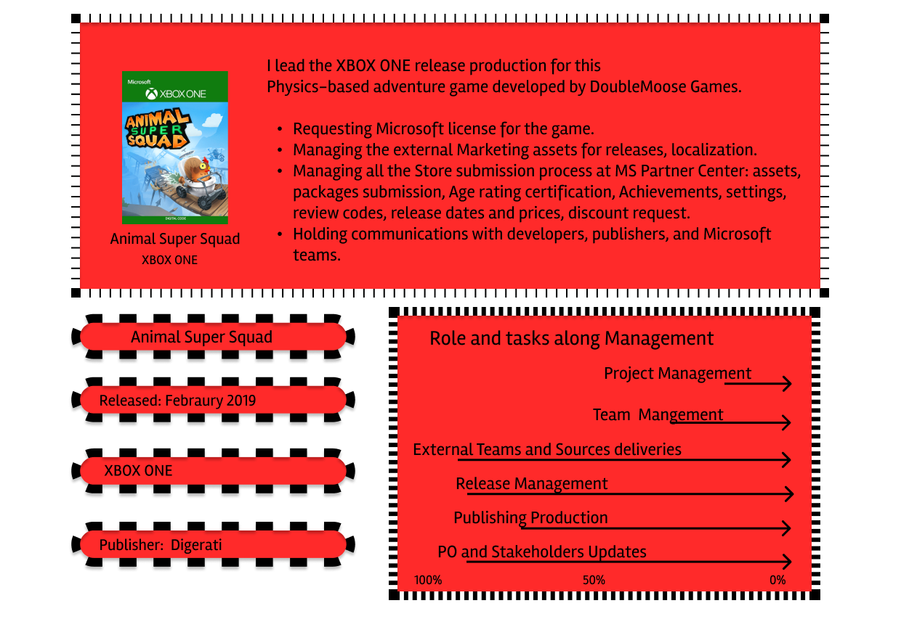
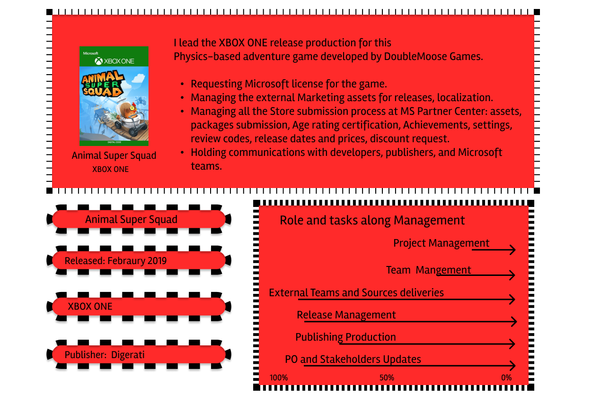
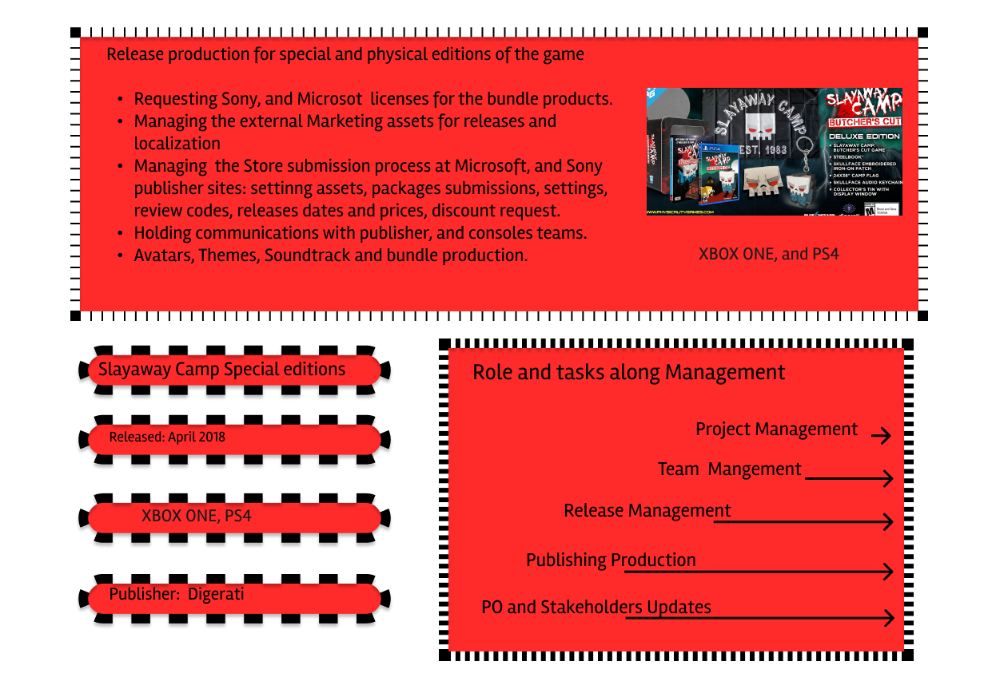
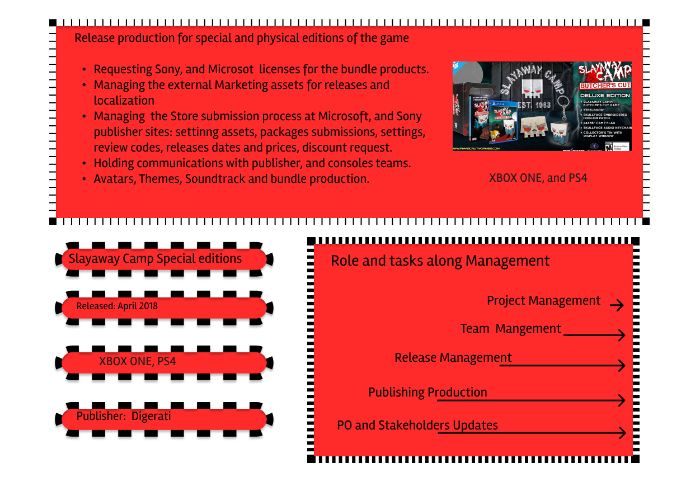
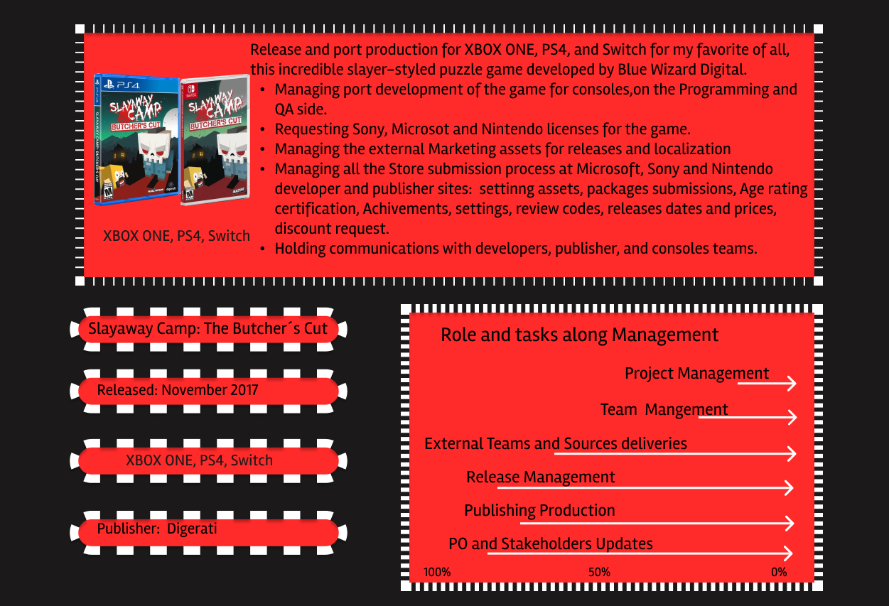
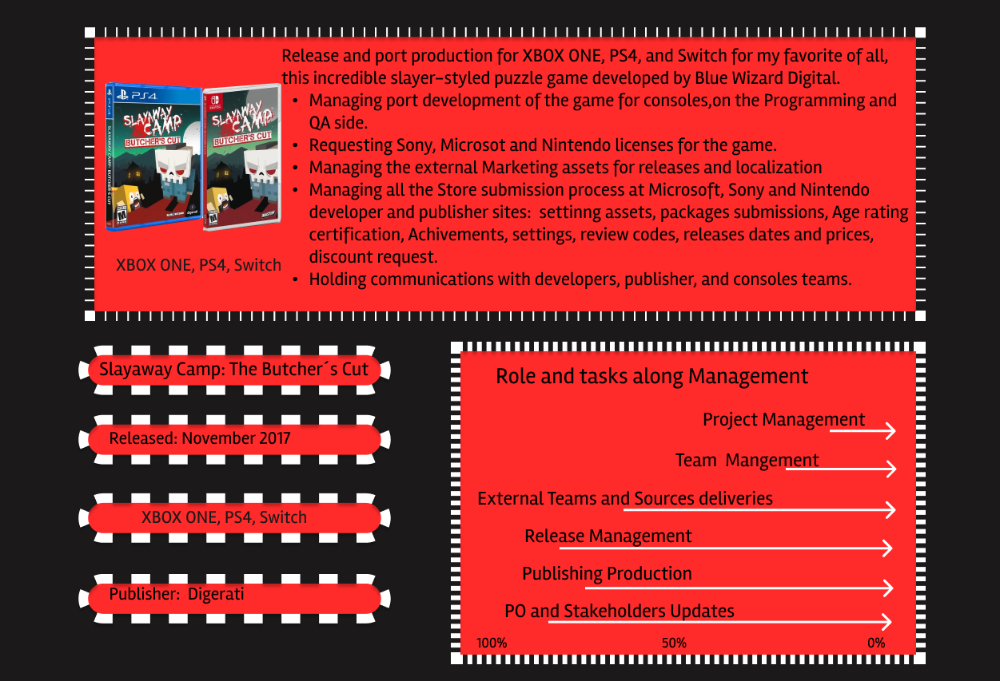

Senior Producer
Open to explore
Intro: About me and How I got into video games.
- I studied History of Art and Marketing (Advertising and Public Relations), specializing in Brand Corporate Identity.
- My early career was in TV production and communications. In 2008 I transitioned into social media and online communications.
- Between 2012 and 2013, while exploring web development, I began teaching myself to code; shortly afterward I discovered Python and continued learning programming independently.
- My passion for coding led me into video games, where I fell in love with narrative, mechanics, and the entire process of game creation.
- In 2015, I paused my career to pursue a Master’s degree in Game Development at CICE (Madrid), which covered:
- Game development with Unity engine
- Programming in C#
- Basic modeling, texturing and animation in 3Ds Max
Senior Producer 2K Valencia (Valencia, Spain) Jan 2023 – Apr 2025
ROLES & OWNERSHIPS:
2K Valencia is a studio specialized in high-quality art asset outsourcing for AAA games from 2K IPs. During my time here, I designed and standardized art production processes, strengthened my management skills, and developed a data-driven, automation-focused approach.
- Milestone planning, tracking and reporting for dedicated art teams across major AAA 2K IPs
- Communication and reporting to stakeholders — external development studios, internal management, the art team, and 2K Publishing.
- Asset production planning, documentation, delivery-pipeline management and approval coordination.
- Define milestone plans, track progress, and report on 31st Union and Ethos (2K IP) projects.
- Manage communication and reporting with stakeholders — 31st Union (external development studio), 2K internal management, production team, and art team.
- Oversee the asset pipeline, including production planning, documentation, delivery workflows, and approvals.
- Identify and address potential risks and issues throughout the game development lifecycle.
- Managed a 23-member multidisciplinary art team across character, environment, and hard-surface disciplines.
- Conducted performance reviews, OKRs, one-on-ones, and career development planning.
- Led a data-analysis initiative to better assess and track the team’s technical, artistic, and soft skills.
- Define and document the milestone plan and deliverables for 2K and 31st Union’s Ethos IP.
- Communicate progress and reports to stakeholders: external studio management, internal leadership, and 2K’s publishing legal team.
- Track and report on asset production plans, pipelines, and approvals.
- Led production and management initiatives, including a series of workshop sessions to align and share expertise across the art team.
- Developed and proposed documentation and pipeline improvements—covering onboarding processes, technical workflows, pipeline centralization and rollout of standardized documentation.
Producer astragon Entertainment (Düsseldorf, Germany) Feb 2022 – Dec 2022
ROLES & OWNERSHIPS:
Coordinated and managed the publishing production for Police Simulator: Patrol Officers from Steam beta through console launch—and oversaw the post-launch live-ops plan.
- Coordinated milestone planning across development, QA, and publishing teams, engaging both internal and external stakeholders.
- Identified and mitigated potential risks and issues throughout the development cycle.
- Directed QA strategy and execution—covering compliance, functionality, and user-experience testing—and tracked progress against the roadmap.
- Gestión de submissions de certificación para Sony, Microsoft, Nintendo y Steam.
- Definición y gestión de roadmap QA para testing de gameplay y certificación.
- Informes de progreso a stakeholders internos y externos.
- Coordinated milestone planning with the development team.
- Identified and mitigated potential risks and issues during development.
- Communicated progress and reports to both internal and external stakeholders.
- Established and managed the QA roadmap—covering compliance, functionality, and UX—for gameplay testing and certification.
- Oversaw console certification submissions across all first-party platforms (Sony, Microsoft, Nintendo) and Steam.
- Gained expertise in organizing and standardizing workflows within a robust, consolidated system.
- Aligned development and publishing strategies with key stakeholders (sales, finance, marketing, media) to uphold high quality standards and achieve KPI targets.
- Enhanced release management capabilities by owning console certification build submissions for a AA title.
Producer Stage Clear Studios (Madrid, Spain) Jan 2017 – Feb 2022
In January 2017, I joined Stage Clear Studios as a programmer intern. By May 2017, I had transitioned into a producer role—first overseeing port development and release production, then serving as the publishing lead for port projects—delivering over 50 titles.
Game Development Producer 2019 – 2022
In 2019, I transitioned into a Game Development Producer role—first serving as Assistant Producer on The Last Kids on Earth, and then taking full ownership of development for the 2.5D platformer Ryan Rescue Squad (based on the Ryan’s World IP), which was published by Outright Games and released on March 4, 2022.
● Development Production- Managed end-to-end production for Ryan Rescue Squad, from initial pitch through final release.
- Coordinated cross-departmental timelines—design, art, UI, SFX, VFX, programming, and QA—to keep milestones aligned with project scope.
- Proactively identified and mitigated risks and issues throughout development.
- Implemented and championed Agile methodologies, acting as both Scrum Master and Project Manager.
● Communication, report and planning with external stakeholders
- Communicated progress and status updates to both external and internal stakeholders.
- Maintained all project documentation—agendas, meeting notes, and post-meeting reports.
- Proactively identified and mitigated risks and issues throughout development.
- Implemented and championed Agile methodologies, acting as both Scrum Master and Project Manager.
● Ryan Rescue Squad in numbers:
- TIME OF DEVELOPMENT: 15 months
- TEAM SIZE: Internal: 30 (design x2, art x3, programming x4, QA x2, UI x1, SFX x1, VFX x1)
Port Dev & Release Producer / Publisher Producer 2017 – 2021
Managed the end-to-end development, publishing, and release cycle for port projects in partnership with Digerati and Big Sugar Games.
● Port Development & Release Production- Managed project review cycles, guiding the programming team’s analysis and QA gameplay/performance reporting.
- Oversaw pipelines, resource allocation, and milestone planning across port development (programming and QA).
- Maintained comprehensive documentation—agendas, meeting notes, and stakeholder reports.
- Coordinated console certification submissions through first-party backends (Sony, Nintendo, Microsoft).
● Publisher
- Led product management for the entire front-end cycle and release on first-party consoles (Sony, Nintendo, Microsoft).
- Coordinated requests for first-party LSAs, licenses, and age ratings.
- Managed external timelines for marketing assets and collateral.
- Communicated and reported to internal and external stakeholders—game developers, publisher management, marketing, social media, etc.
Titles as lead release producer
 Animal Super Squad XBOX ONE

Animal Super Squad XBOX ONE


 Slayaway Camp: The Butcher´s Cut Special Edition PS4

Slayaway Camp: The Butcher´s Cut Special Edition PS4

 Bleed XBOX ONE, SWITCH
Bleed XBOX ONE, SWITCH

 Bleed 2 XBOX ONE, SWITCH
Bleed 2 XBOX ONE, SWITCH

 Slayaway Camp: The Butcher´s Cut PS4, XBOX ONE, SWITCH

Slayaway Camp: The Butcher´s Cut PS4, XBOX ONE, SWITCH


Other titles released as Lead Release & Port Producer:
● Albert and Otto for: XBOX, PS4, Switch
● Glass Masquerade 1 & 2 for: XBOX, PS4, and Switch
● Vertical Drop Heroes for: XBOX, and Switch
● Snakeybus for: XBOX, PS4, and Switch
● Sunless Sea Zubmariner edition for: XBOX
● Reverse Crawl for: XBOX, PS4, and Switch
● Skelly Selest for: XBOX, PS4, and Switch
● Odallus the Dark Calls for: XBOX, PS4, and Switch
● Skelly Selest for: XBOX, PS4, and Switch
● Oniken for: XBOX, PS4, and Switch
● Golem Gates for: XBOX, PS4, and Switch
● Verlet Swing for: XBOX, PS4, and Switch
● Super Blood Hockey for: XBOX, PS4, and Switch
● Omensight for: XBOX
● Stories: The Path of Destinies for: XBOX, PS4, and Switch
● Demons with Shotguns for: XBOX, PS4, and Switch
● Tamashii for: XBOX, PS4, and Switch
● Nefarious for: XBOX, PS4, and Switch
● Straimium Immortaly for: XBOX, PS4, and Switch
● Demon Pit for: XBOX, PS4, and Switch
● Frost for: XBOX, PS4, and Switch
● XenoRaptor for: XBOX, PS4, and Switch
● UnExplored for: XBOX, PS4, and Switch
● Monster Slayers for: XBOX, PS4, and Switch
● Blacksea Odyssey for: XBOX, PS4, and Switch
● Omega Strike for: XBOX, PS4, and Switch
● Spectrum for: XBOX, PS4, and Switch
● Don’t Die Mr. Robor for: XBOX, PS4, and Switch
● The Sun & Moon for: XBOX, PS4, and Switch
● The Aquatic Adventure of the Last Human on Earth for: XBOX, PS4, and Switch
● Shikhondo: Soul Eater for: XBOX, PS4, and Switch
● Pipe Push Paradise for: XBOX, PS4, and Switch
● Ink for: XBOX, PS4, and Switch
● Letter Quest Remastered for: XBOX, PS4, and Switch
● Three Fourths Home for: XBOX, PS4, and Switch
● Paranautical Activity for: XBOX, PS4, and Switch
● Hackey Zack for: XBOX, PS4, and Switch
● Dream Break for: XBOX, PS4, and Switch
● Uncanny Valley for: XBOX, PS4, and Switch
● Kill All Zombies for: XBOX, PS4, and Switch
● Valfaris for: XBOX, PS4, and Switch
● Unto The End for: XBOX, PS4, and Switch
Management tools.
Hover over the icons to know how I use each tool for Team and project management.
IT & Design Skills.
Hover over the icons to see my skills proficiency on other tools I use to work on my personal projects:
- Programming
- Design
Experience & Studies.
- Experience
- Academic Studies
Contact.
If you think my profile could be a good asset to your team, don't hesitate to contact me